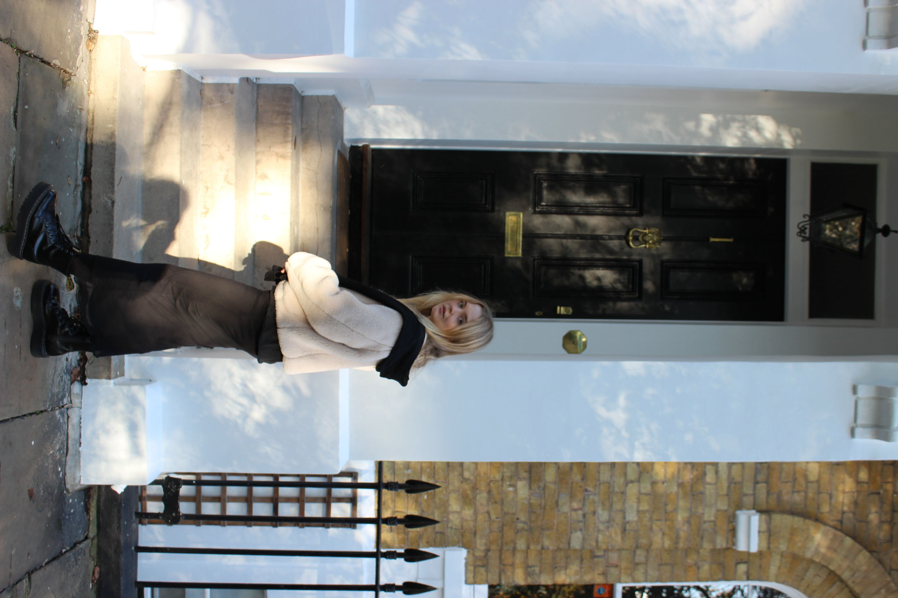

I was born in Moscow, Russia. I studied Sociology at Moscow State University.
Right after receiving my Bachelor's degree in 2022, I decided to leave my hometown and start over in London.
I'm currently studying at 42 London, a project-based Computer Science school.
Here, I have been learning C and C++ languages, but I am very open to exploring new things and happy to take on challenges in different areas.
